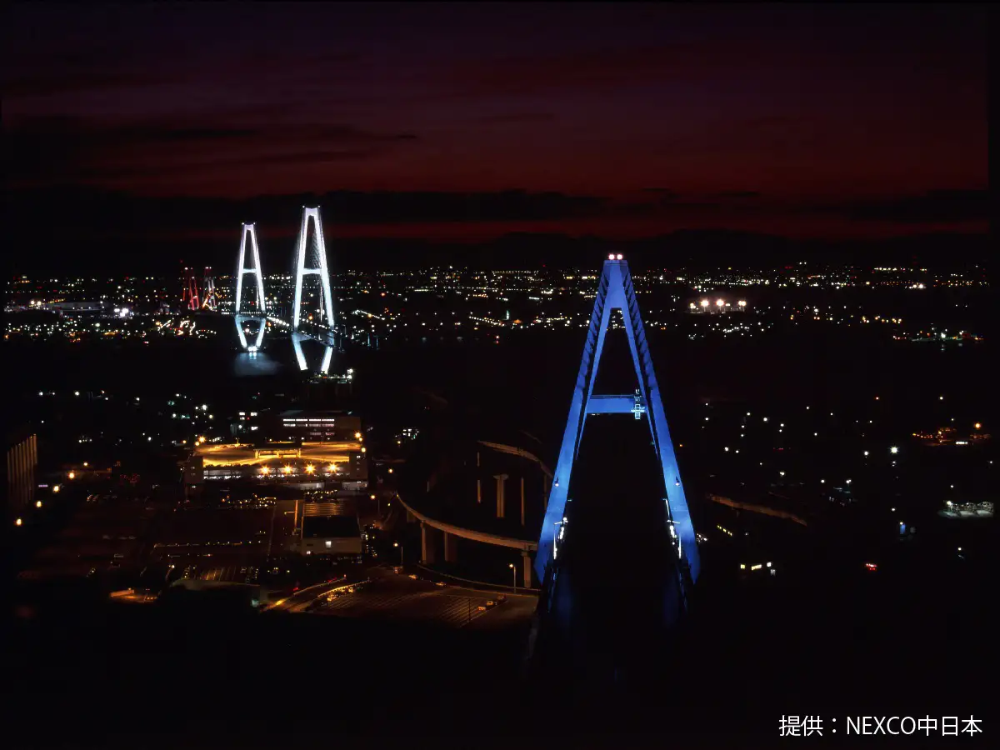
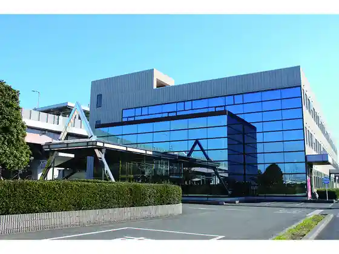
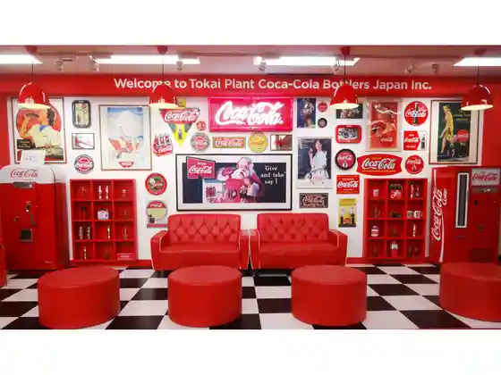

Tokai
Tokai · Aichi
Tokai
Highlighted on the Aichi map.

Sights
Meiko Toriton
Tanzo Gijutsu no Kan Aichi Seiko

Nihonsei Tetsu Nagoya Seitetsusho
Koka · Kora Botorazujapan Tokai Kojo

Toho Gasu Gasuenerugii Kan
Tokai Shiawase Village
Heishu Memorial Museum Local History Museum
Oike Park
Juraku Sono Great Buddha